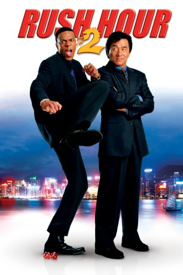
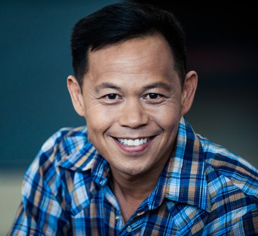

#1995 Rush Hour 2
 
 IMDB-Wertung: 6.6 / 10
IMDB-Wertung: 6.6 / 10  Metascore: 48
Metascore: 48 
Lee und Carter sind zurück! Dieses Mal macht das ungleiche Team die Straßen von Hong Kong unsicher, um einer Band von Geldfälschern auf die Schliche zu kommen. Eigentlich sollte es ja nur ein entspannender Urlaub werden, doch kaum angekommen, stecken die Supercops schon in den allergrößten Schwierigkeiten. Zwei amerikanische Zöllner, die den Verbrechern auf der Spur waren, um den Gaunern mit großer Klappe und harten Schlägen das Handwerk zu legen. Nur Carter hat einige Probleme, sich mit den Gewohnheiten der Einheimischen anzufreunden - oder um es mit Lees Worten auszudrücken: "Hier bin ich Michael Jackson - und du Toto"...
Jahr: 2001
Dauer: 90 Minuten
FSK: 12
Land: USA Studio: New Line CinemaTonspuren: DD5.1 - ,
Untertitel:
Auflösung: 1080p (1920x816) Größe: 3440 MB
Genre: Action, Thriller, Komödie, Krimi, Mystery
Regisseur:  Brett Ratner
Brett Ratner
Drehbuch: Ross LaManna, Jeff Nathanson
Soundtrack: Lalo Schifrin
Darsteller:
 Jackie Chan als Lee
Jackie Chan als Lee Chris Tucker als Carter
Chris Tucker als Carter John Lone als Ricky Tan
John Lone als Ricky Tan Ziyi Zhang als Hu Li
Ziyi Zhang als Hu Li Roselyn Sanchez als Isabella Molina
Roselyn Sanchez als Isabella Molina- Alan King als Steven Reign
 Harris Yulin als Agent Sterling
Harris Yulin als Agent Sterling Kenneth Tsang als Captain Chin
Kenneth Tsang als Captain Chin- Lisa LoCicero als Receptionist
- Mei Melançon als Girl in Car
 Maggie Q als Girl in Car
Maggie Q als Girl in Car- Gelbert Coloma als Karaoke Singer
- Cindy Lu als Heaven on Earth Hostess #2
- Audrey Quock als Kenny's Wife
-  Ernie Reyes Jr. als Zing
 Jeremy Piven als Versace Salesman
Jeremy Piven als Versace Salesman Joel McKinnon Miller als Tex
Joel McKinnon Miller als Tex- Angela Little als Tex's Girlfriend
- Julia Schultz als Tex's Girlfriend
 Saul Rubinek als Red Dragon Box Man
Saul Rubinek als Red Dragon Box Man Gianni Russo als Red Dragon Pit Boss
Gianni Russo als Red Dragon Pit Boss- Tanya Newbould als Gambler
 Matthew Barry als Gambler
Matthew Barry als Gambler- Tai Li Bond als Heaven on Earth Hostess , uncredited
 Don Cheadle als Kenny , uncredited
Don Cheadle als Kenny , uncredited- Andy Cheng als Hu Li's assistant , uncredited
- Tom Sean Foley als Casino Stunt , uncredited
 James Lew als Triad Gangster , uncredited
James Lew als Triad Gangster , uncredited- Roger Lim als Triad Gangster , uncredited
- Kathryn Melton als Office Assistant , uncredited
- Cynthia Pinot als High Roller Girl , uncredited
 Simon Rhee als Triad Gangster , uncredited
Simon Rhee als Triad Gangster , uncredited- Melissa Scott Clark als Model #1 , uncredited
- Ivan Shaw als Triad Gangster , uncredited
- Lina So als Cashier , uncredited
- Reggi Danielle Sweat als High Roller Girl , uncredited
- Michael A. Tessiero als Gambler , uncredited
- Juting Tsang als Heaven on Earth Host , uncredited
- Natasha Yi als Heaven on Earth Host , uncredited
- Patricia Chan als Club Hostess
- Lucy Lin als Heaven on Earth Hostess
- Wing Sang Pang als Suit Salesman
- Mei Ling Wong als Chicken Lady
- William Duen Wai-Lun als Carter's Cab Driver
- Shawn Peretz als United Flight Attendant
- Verena Mei als Red Dragon Waitress
- James J. Ghang als Red Dragon Stickman
- Michael Chow als Gambler
- Teresa Lin als Gambler
- James C. Duke als Gambler
Datei: X:\3-Trilogie(N-Z)\Rush Hour\Rush Hour 2 (2001, FSK12, 1920x816).mkv seit 19.09.2015
Festplatte: HD Collection-3(N-Z)-6(A-Z)
 Alle Filme aus Gruppe '3-Trilogie(N-Z)\Rush Hour'
Alle Filme aus Gruppe '3-Trilogie(N-Z)\Rush Hour'